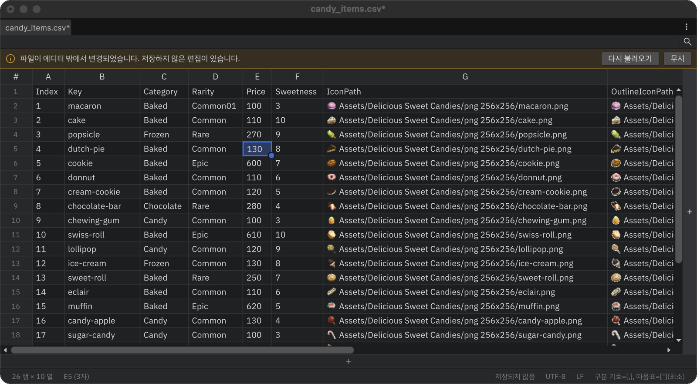

에디터 화면

Tabular Editor 창은 위에서부터 툴바, 찾기·바꾸기 바, 외부 변경 알림 바, 표, 상태 표시줄로 이루어집니다.
툴바와 창 메뉴
툴바에는 검색 아이콘 버튼이 있습니다. 누르거나 Ctrl+F를 누르면 찾기·바꾸기 바가 열립니다.
저장은 Ctrl+S와 창을 닫을 때의 저장 확인으로 합니다.
창 오른쪽 위 ⋮ 메뉴에는 다음 항목이 있습니다.

| 항목 | 기능 |
|---|---|
| 테마 | Unity / Android Studio 중 고릅니다. 다크·라이트는 Unity 에디터 스킨을 따릅니다. |
| 언어 | English / 한국어 중 고릅니다. 바로 화면 전체에 적용됩니다. |
| 이 파일에서 에셋 경로 미리보기 | 이 파일만 에셋 경로 표시를 켜고 끕니다. |
| 환경 설정... | Preferences > Tabular Editor를 엽니다. |
표
- 열 제목은 항상 A, B, C…로 표시됩니다. 제목을 누르면 열 전체가, 끌면 여러 열이 선택됩니다.
- 열 제목에 마우스를 올리면 나타나는 ▼ 버튼으로 정렬 메뉴를 엽니다.
- 열 제목 오른쪽 경계를 끌어 폭을 바꾸고, 더블클릭하면 그 열을 내용에 맞춥니다. 파일을 열 때도 값이 있는 열은 내용에 맞는 폭으로 시작합니다.
- 행 번호를 누르면 행 전체가, 끌면 여러 행이 선택됩니다. 행 번호 우클릭 메뉴에서 헤더 행을 정합니다.
- 선택 범위는 파란 테두리로 감싸지고, 오른쪽 아래 동그란 점이 채우기 핸들입니다.
- 표 오른쪽 끝과 아래쪽 끝의 + 버튼은 맨 끝에 열과 행을 하나씩 추가합니다.
- 마지막 열 오른쪽이나 마지막 행 아래 빈 공간을 누르면 가장 가까운 셀이 선택됩니다.
- 마우스 휠은 세로, Shift+휠과 트랙패드 좌우 쓸기는 가로로 스크롤합니다. Ctrl+휠(macOS는 Cmd+휠)은 글꼴 크기를 바꿉니다.
찾기·바꾸기 바
찾기와 바꾸기를 참고하세요.
외부 변경 알림 바
다른 프로그램이 열린 파일을 바꾸면 Tabular Editor가 바로 다시 읽습니다. 저장하지 않은 편집이 있을 때만 표 위에 알림 바가 나타나며, 다시 불러오기(편집을 버리고 읽기) 또는 무시(편집 유지, 저장할 때 덮어쓸지 다시 확인)를 고릅니다.

상태 표시줄
| 위치 | 표시 |
|---|---|
| 왼쪽 | 표 크기(120 행 × 8 열) |
활성 셀 주소와 정보(C12 (4자), 범위면 54 셀, 행·열 전체 선택이면 행 3개 · Delete로 삭제) |
|
에셋 경로 열에 문제가 있으면 찾을 수 없는 경로 3개 — 누르면 다음 문제 칸으로 이동 |
|
| 오른쪽 | 저장되지 않음 |
| 인코딩, 줄 끝(LF/CRLF), 구분 기호·따옴표 규칙 — 누르면 파일 형식 대화상자가 열립니다. |
활성 셀 주소(C12)는 Ctrl+G 이동에 그대로 넣을 수 있습니다.